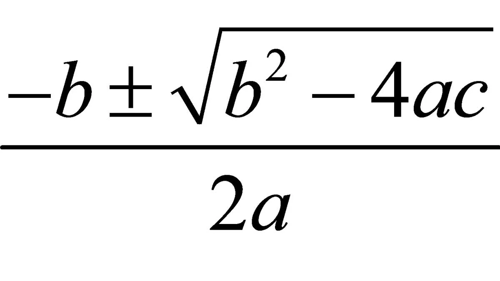

Calcula la secuencia de fibonacci atendiendo a la formula:
Calcula el factorial de un numero (n!):
Desarrolla un programa que le pida al usuario una cantidad de días en valor entero y el programa deberá devolver cuantas horas minutos y segundos son.
Realiza un programa capaz de resolver una ecuación de segundo grado. Para ello, se solicitará el valor de los coeficientes a, b y c y devolverá su solución. Teniendo en cuenta la formula:
